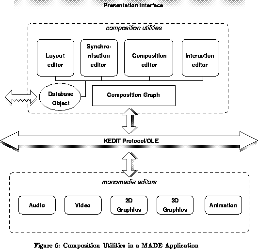

Figure 6 illustrates a possibility for hypermedia document manipulation using the full-blown composition utilities described in §4.3. The programming environment offered by MADE in this setting is hypermedia document authoring; quite naturally, the user community for such an environment differs radically from the community of ``traditional'' programmers. (Very often, to make the distinction, members of this community are referred to as ``authors'', as opposed to ``users''.)

In this authoring environment, the composition utilities are conceptually separate from the media editors. The composition utilities act as the coordinating components of the complete architecture. Effectively, there is an inter-editor message facility that is used to both control the operation of the media editors and to provide information to the composition utilities representing actions performed by the user through dialogues with the media editors. In this setting the media editors may be considered as separate applications or, in other terms, as separate service providers. These applications may be realized following the scheme described in the previous section.
This organisation implies that media objects or references to objects are passed between the composition utility and the media editors in order to ``render'' them. Similarly, edited media objects may need to be passed back to the composition editor and placed into the multimedia database.
Note that a simpler version of the architecture, including a simpler version for each of the media editors, may be defined to be used for ``playback'' only.